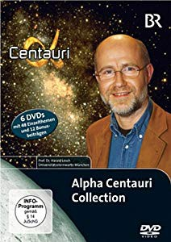

")
 
 IMDB-Wertung: 8.8 / 10
IMDB-Wertung: 8.8 / 10  Metascore:
Metascore: 
Anschaulich, fundiert und humorvoll erklärt Prof. Dr. Harald Lesch von der Universitätssternwarte München in 15-minütigen Abhandlungen Astrophysik. Wobei er sich immer ein Thema setzt, das er unheimlich interessant behandelt. Von der Aufmachung ist die Sendung einfach, ohne Firlefanz gestaltet und an eine Uni-Vorlesung angelehnt. Aber gerade das macht diese Sendung aus.
Jahr: 1998
Dauer: 107 Minuten
FSK:
Land: Deutschland Studio: Tonspuren:
Untertitel:
Auflösung: SD (576x432) Größe: 696 MB
Genre: Dokumentation, TV-Serie
Regisseur:
Drehbuch: Harald Lesch
Soundtrack:
Darsteller:
Datei: X:\Dokumentationen\Weltraum\Alpha Centauri\Alpha Centauri Teil 1 - Zeit,Universum.avi seit 22.06.2019
Festplatte: HD Serien(SU-Z)+Dokus+Musik
 Es gibt insgesamt 22 Filme in der Gruppe 'Dokumentationen\Weltraum'
Es gibt insgesamt 22 Filme in der Gruppe 'Dokumentationen\Weltraum'